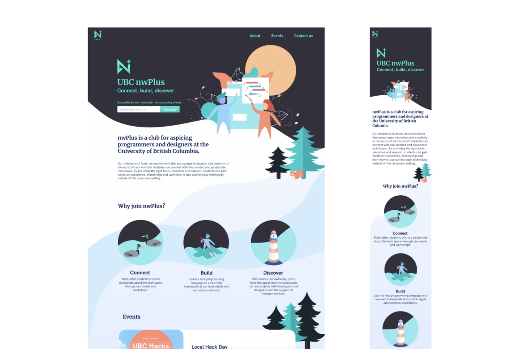
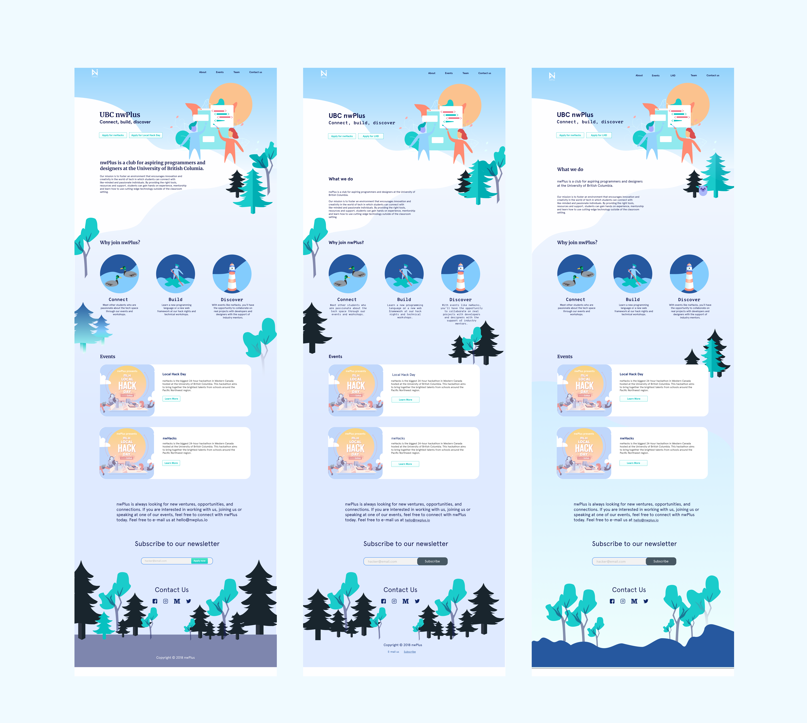

nwhacks
Creating a modern hackathon brand
NwPlus is a club at UBC that hosts the largest hackathon in western Canada, NwHacks. I took on the design of the website and coming up with a new logo as well as color scheme for the rebranding of nwPlus.
I created custom illustrations that explore the theme of building and nature since the west coast. We then built mid fidelity prototypes and high fidelity designs for web and mobile and conceptualized branding for logos, social media banners, and posters

Other Iterations
I explored other colours and variations before finalizing the colour template

Outcome
We were able to host a successful hackathon with 1200 attendees and attract more people to join nwPlus events. We also attracted sponsors like Amazon and Hootsuite to support the hackathon.